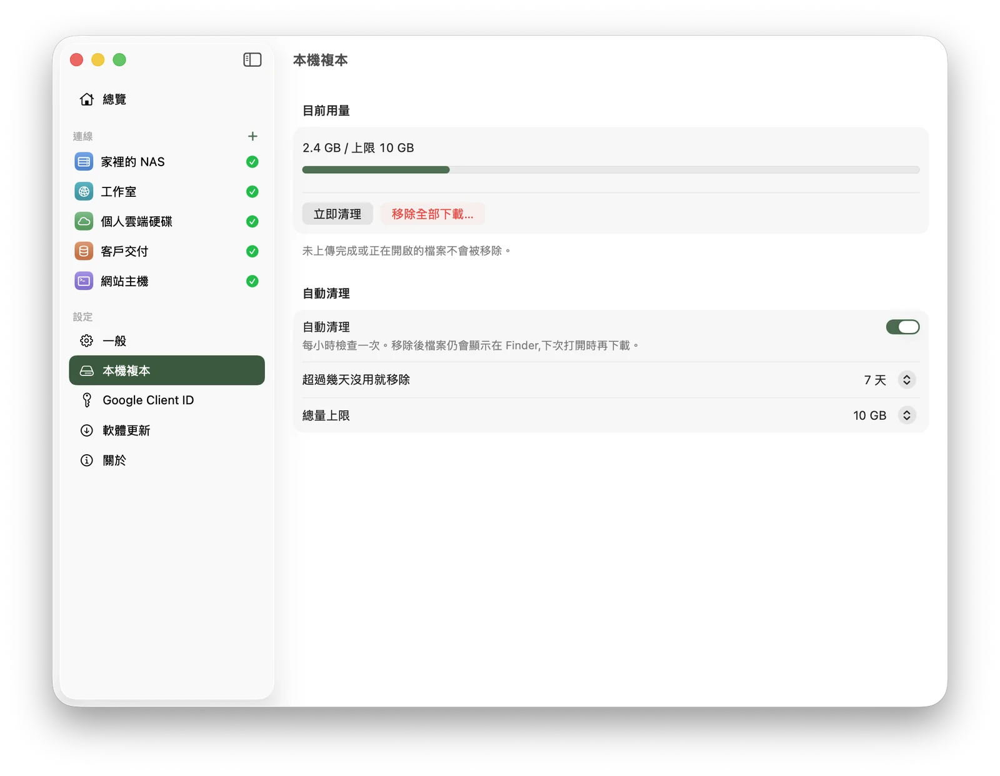
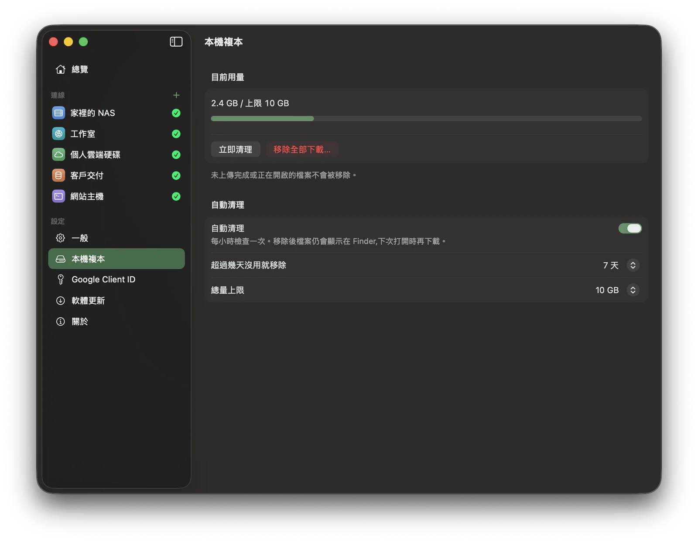
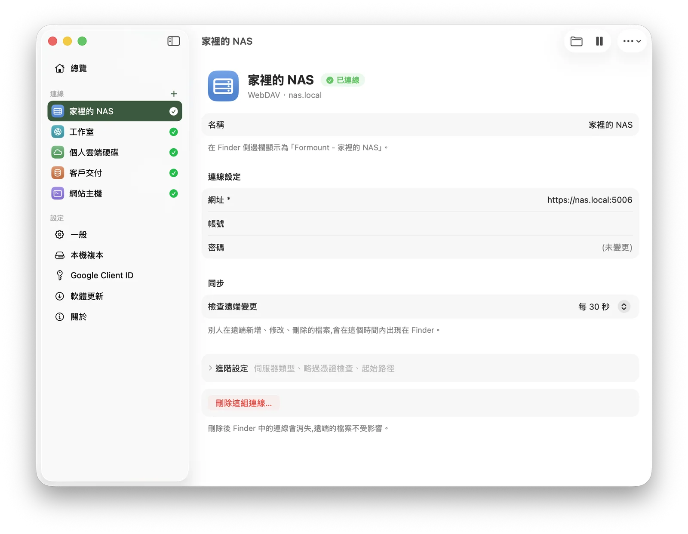
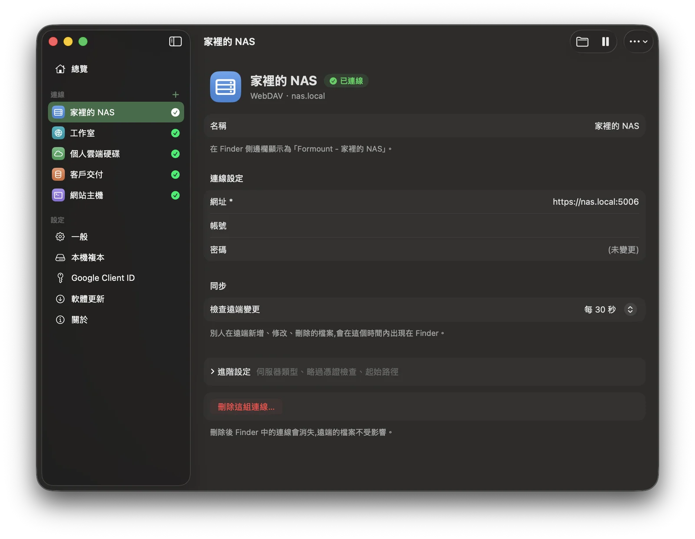
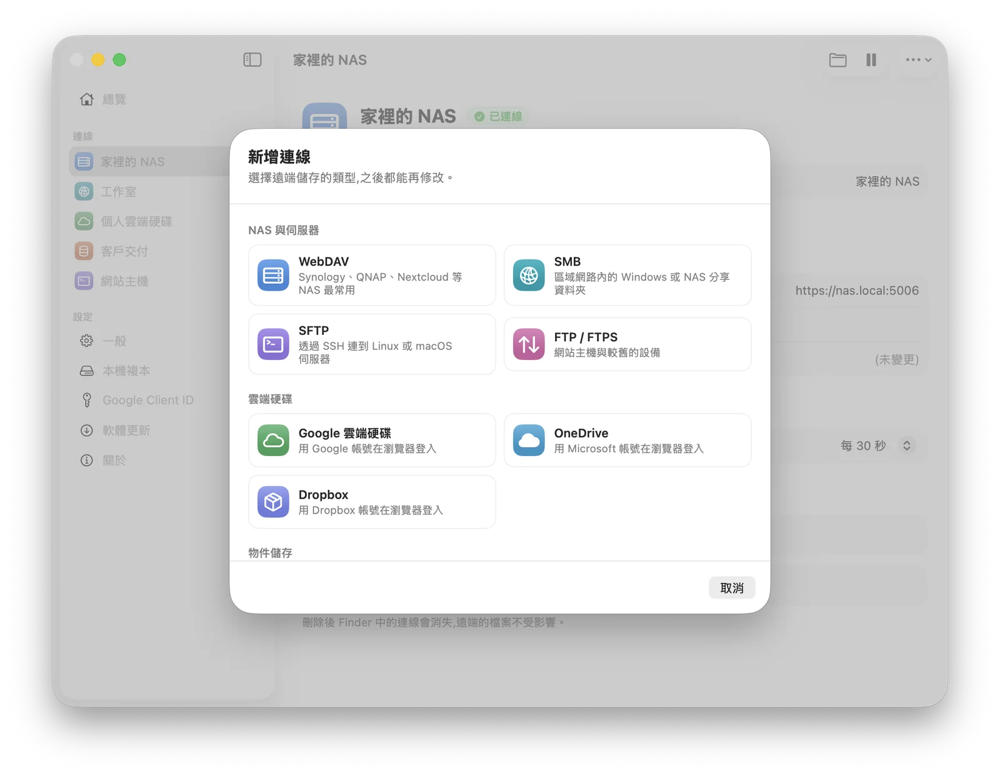
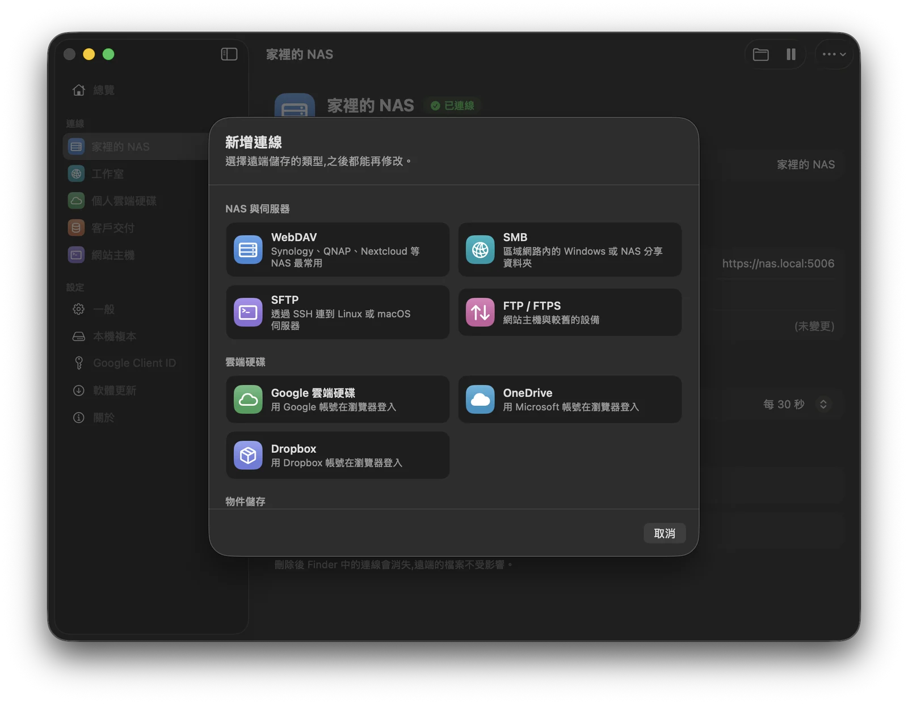
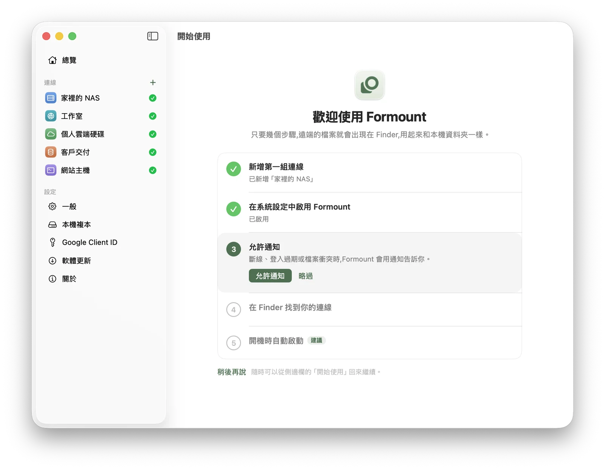
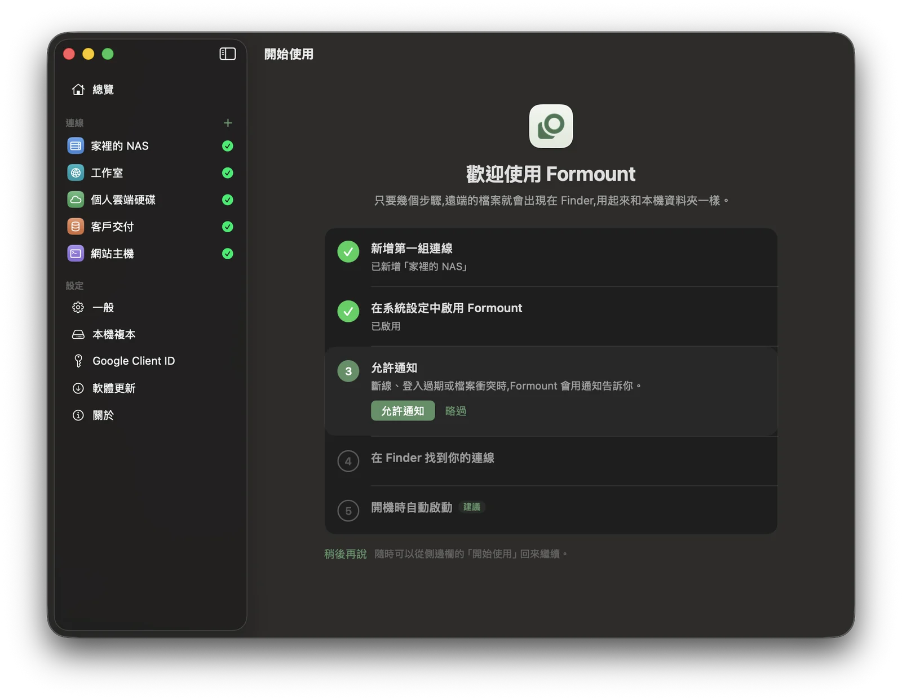

把 NAS、伺服器和雲端硬碟放進 Finder。
裝好之後,遠端的檔案就出現在 Finder 側邊欄,用起來和本機資料夾一樣。不用開網頁、不用另外的同步程式,也不用把整個雲端硬碟下載到電腦裡。
一個 App,連上所有空間
可以同時設定很多組連線,各自獨立暫停、恢復。雲端硬碟是在瀏覽器登入,Formount 不會看到你的密碼。
就在 Finder 裡
連線會出現在 Finder 側邊欄的「位置」下方,名稱是「Formount - 你取的名字」。打開、拖放、存檔、用 Photoshop 或 Final Cut 直接編輯,全都和本機資料夾一樣。不用學新介面。
不佔硬碟空間
檔案打開時才下載,Finder 裡看得到全部檔案,但電腦只存你用過的。一段時間沒用的檔案會自動清掉(預設 7 天、總量 10 GB,都可以調整),檔案仍然留在 Finder,下次打開時再下載。


斷線也不怕
- 網路中斷時不會卡住 Finder,恢復後自動重新連線
- 開機後在背景自動掛載所有連線
- 別人在遠端新增、修改、刪除的檔案,幾十秒內就會出現在 Finder
- 兩邊同時改到同一個檔案時,兩份都保留,不會互相覆蓋


隨時知道狀況
選單列圖示會顯示目前狀態。點開可以看到每組連線的狀態、正在傳輸的檔案和進度、最近的衝突。斷線或登入過期時會用通知告訴你。
三個步驟開始使用




安全、私密
常見問題
會把我的雲端硬碟整個下載到電腦嗎?
不會。檔案打開時才下載,沒用的會自動清理。
需要安裝 macFUSE 或降低系統安全性嗎?
不用。Formount 使用 Apple 官方的 File Provider,和 iCloud 雲碟相同。
為什麼要在系統設定裡打開 Formount?
這是 macOS 的規定,所有使用 File Provider 的 App(包括 Dropbox、OneDrive 官方 App)第一次都要由使用者打開。
斷線時會怎樣?
Finder 不會卡住;已下載的檔案照常能開,網路恢復後自動連回來。
兩個人同時改同一個檔案呢?
兩份都會保留,你的版本會另存成「衝突複本」,不會覆蓋別人的修改。
我的密碼安全嗎?
只存在你的 Mac 上,不會傳給 Formount 或任何第三方。
Synology 要怎麼設定?
在 DSM 開啟 WebDAV Server,Formount 選 WebDAV,填 https://你的 NAS 位址:5006。
收費嗎?
不收費,Formount 可以免費下載使用。
下載 Formount
打開 dmg 後,把 Formount 拖到「應用程式」資料夾。App 內建自動更新,裝一次就好。